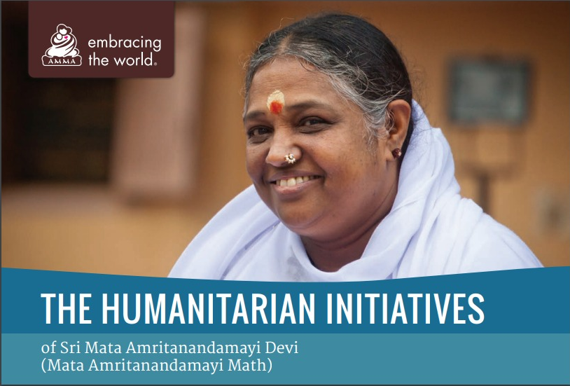
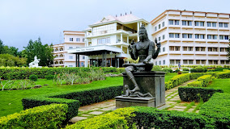

 Amrita Vishwa Vidyapeetham is a private deemed-to-be-university and Institute of Eminence based in Coimbatore , Tamil Nadu, India. The multi-campus, multi-disciplinary university currently has 6 campuses with 15 constituent schools across Tamil Nadu, Kerala and Karnataka. It offers a total of 207 undergraduate, postgraduate, integrated-degree, dual-degree, doctoral, and certification programs in Engineering, Medicine, Business, Arts & Sciences, Biotechnology, Mass Communication and Social Work. The university was founded with the opening of Amrita School of Engineering, Coimbatore in 1994 by Mata Amritanandamayi Devi, and is managed by her international humanitarian organisation Mata Amritanandamayi Math. In 2003, it became one of the youngest institutes to be deemed a university, when it was conferred this status by the UGC.At present, the university has 6 campuses, with 15 constituent schools spread across both rural and urban sites in three south Indian states - Tamil Nadu, Kerala and Karnataka.[1] The first to be established was the Coimbatore campus in 1994, with the opening of Amrita School of Engineering at Ettimadai, a village about 20 km east of the Coimbatore city. Amrita Institute of Medical Sciences (AIMS) in Edapally, Kochi was inaugurated in 17 May 1998 by the then Prime Minister, Atal Bihari Vajpayee.
 Later in 2002, two campuses were opened, one urban campus at the IT capital of India - Bengaluru, and one rural campus in Amritapuri village, which also hosts the headquarters of the Mata Amritanandamayi Math that runs the university. In 2019 Faridabad, Haryana[7] and Amaravati, Andhra Pradesh.Amrita Schools of Arts and Sciences The schools offer Bachelor of Commerce (B.Com.), Bachelor of Business Management (BBM), Bachelor of Computer Applications (BCA), Master of Computer Applications (MCA), Master of Science (M.Sc.) in Computer Science and Information Technology. The campuses offering Arts and Sciences are[9] located at Amritapuri, Kochi and Mysore. Amrita Schools of Business The school offers AACSB accredited residential two-year MBA degree program. In addition, it offers a dual degree program leading to an MS in information technology and MBA in collaboration with State University of New York at Buffalo, for working professionals at the Bangalore campus.[10] Faculty members have M.B.A.s and Doctorate from reputed foreign universities such as University of California, Berkeley, Cornell University, NYU Stern School of Business, University of Texas at Austin, and Kellogg School of Management.[11] Amrita School of Biotechnology The school was started in September 2004 and offers B.Sc. and M.Sc. in Biotechnology, B.Sc. and M.Sc. in Microbiology, and M.Sc. in Bioinformatics, as well as Ph.D. degree programs.[12] Its research spans a wide spectrum including Cell Biology, Molecular Biology, Cancer Biology, Cell-line Engineering, Wound Healing, Computational Neuroscience, Neurophysiology, Phytochemistry, Biomedical Engineering, Proteomics, RNAi, Analytical Chemistry, Snake Venoms, Sanitation Biotechnology.[13] The Amrita School of Biotechnology is approved as a Center of Relevance and Excellence (CORE) in Biomedical Technology under the Department of Science and Technology, Government of India, TIFAC Mission REACH programme. The School of Biotechnology was selected by the DBT-BIRAC (Government of India) and the Bill & Melinda Gates Foundation as one of the top six innovators in India to develop next generation sanitation solutions using bacteriophages and other biocontrol agents.[14][15]